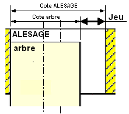
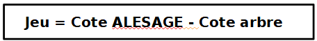
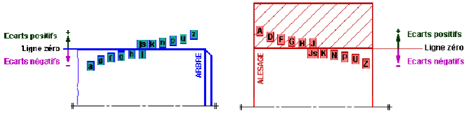
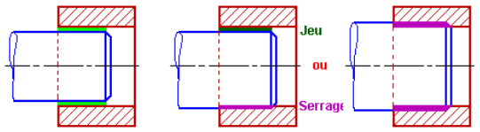

Jeu et types d’assemblages
Pour définir un contact entre deux pièces d’un assemblage, il nous faut savoir si celles-ci doivent être fixes, ajustée ou mobile l’une par rapport à l’autre. Ce contact est caractérisé par un Jeu dit « fonctionnel », espace ménagé entre deux pièces pour permettre le fonctionnement.

Ce Jeu se calcule en effectuant l’opération suivante :

En fonction des positions des tolérances réalisées sur l’ALESAGE et sur l’arbre, le jeu peut être Maxi ou mini

JeuMaxi (JM ou Sm Serrage mini) = CoteMaxi ALESAGE – Cotemini arbre
Jeumini (Jm ou SM Serrage Maxi) = Cotemini ALESAGE – CoteMaxi arbre
Les résultats des calculs du JM (JeuMaxi) et du Jm (Jeumini) nous renseignent sur le type d’assemblage réalisé :

- Si JM et Jm sont positifs (+ > 0) alors l’ajustement est dit Glissant ;
- Si JM et Jm sont positifs et négatifs ou nuls (+ et – ou 0) alors l’ajustement est dit Incertain.
- Si JM et Jm sont négatifs (- < 0) alors l’ajustement est dit Serré.
Dans le système de l’alésage normal, la position pour les tolérances de tous les ALESAGES est donnée par la lettre H. L’ajustement désiré est obtenu en faisant varier pour l’arbre la position de la tolérance.
Ainsi l’ajustement H7g6 est Glissant, H7p6 est Serré et H7h7 est Incertain.